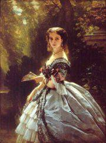
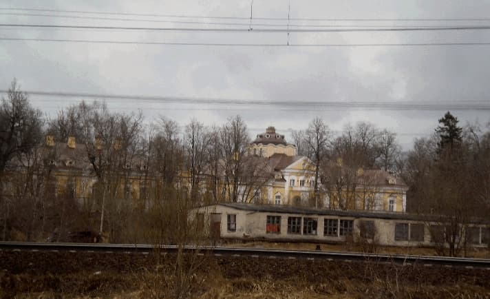

Елизаветино! Налево,
От станции в одной версте,
Тоскует дылицкая дева,
По своему, о красоте ...
Дыша Оранской Изабеллой,
Вступаю в лиственный покой.
Молчит дворец меж сосен белый
И парк княгини Трубецкой.
И. Северянин
Будет правильно сказать, что Елизаветино это станция, а дворец находится в дер. Дылицы.
В лучшие времена имение было роскошным: - дворец, церьковь, парк, пруды, каменные дворовые постройки и конюшни.
Академик Лихачев рассказывал, до войны они проводили время, отправляясь с утра на поезде, вечером возвращаясь на нем же.
Дворцовое убранство было великолепным.
В советское время во дворце размещались учреждения, потом он горел и остались отвратительные развалины, разукрашенные надписями о том кто здесь был и пр.
После смены режима дворец попал в частные руки и был восстановлен.

Размещая фото, хотел исключить свинарник на переднем плане. Решил оставить, как пример убожества в котором мы жили и напоминание тем, кто хочет в него вернуться.